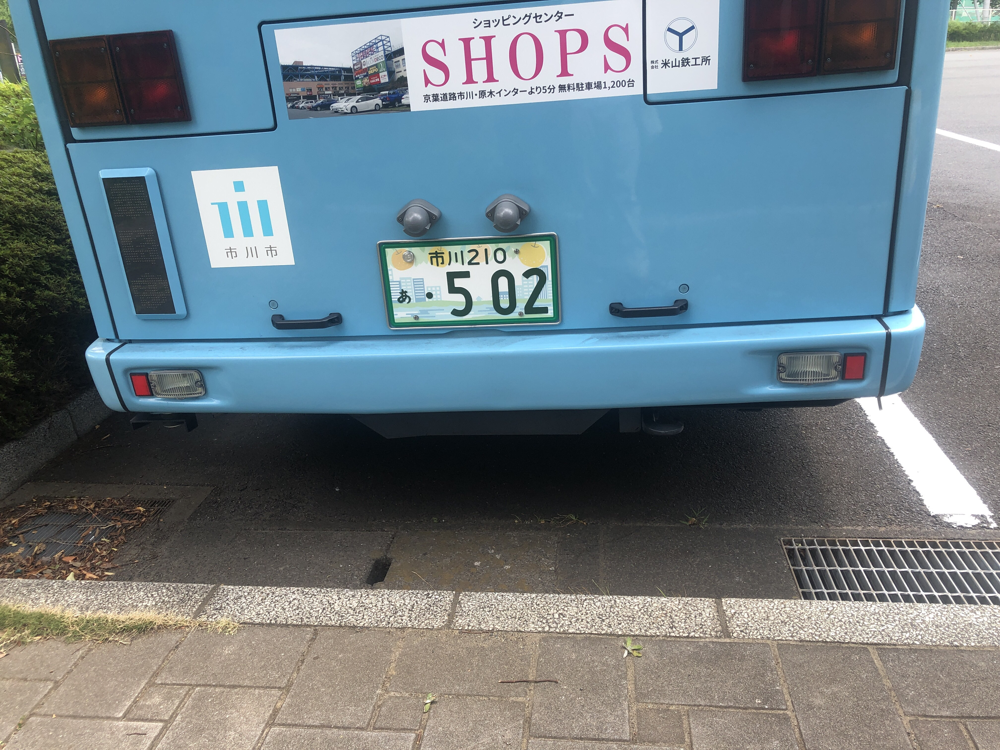
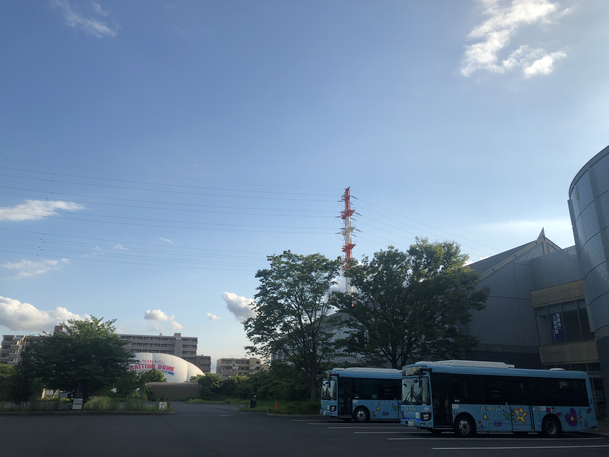

2021年7月24日の記録
妙典駅。M224が未だ現役なのに少し驚く。
南部ルートにはこどもの絵が多くあり、楽しげな雰囲気を出している。
このバスは田尻方面メディアパーク行き。
妙典駅は同じ乗り場から全く反対のバスが出入りしているので、割と誤乗の方がいらっしゃる。
休日ということもあるのか、乗客層はかなり幅広い。
妙好寺。妙好寺山門の石標、本当に昭和五三年の設置なんだろうか…
バスはこの辺りでギリギリのカーブを次々と曲がる。京成トランジットバスでは、二俣線と並んで技術が要求される路線であろう。中型/小型限定運用もなっとくだ。
しかし、その小町を抜けると行徳バイパスに入る。
これは適当な推測なんだが、このバイパスは片方に拡幅したのでなかろうか？片方に用水路跡のようなものがあり、もう片方にはない。
新行徳橋を颯爽と駆け抜け、バスは稲荷木地区へ入る。ちなみに、5月のダイヤ改正で二俣線と南部ルートが遭遇する可能性が少し出てきている。さて、ここが個人的にすごいところだ。鋭角右折からの外環下通過。
さて、そんなところを抜けると工場が立ち並ぶ田尻地区に入る。道路がガッタガタなので山道にも匹敵する乗り心地なのだが、バスに乗る楽しみがそれなので問題なし。実は、最近工事で舗装がまともになりつつあるのでちょっと寂しいのだけど。まあ、それでも舗装をまともにすることはいいことなので、歓迎はしたい。
なんか雲量増えてね？大丈夫？と思いつつもバスはガッシャンガッシャン音を立てつつ走りゆく。
ここで謎のアレ。東京冷化機工業株式會社の入口の銘板がかっこいい。謎のアレ終わり。
さて、いよいよショップス前なのだけど、バスはその手前で高速を跨ぐかなり急な橋を渡る。下手したら江戸時代みたいな、そんな橋。いつもバスで通る時に擦らないか心配になってしまう笑
コンクリ打ちっぱなしに「TOKIWA TOOLS」が刻まれている。かっこいい。
ここから自動車店の通り。プジョー、マツダ、その他いろいろ…マツダや市川住宅公園の案内看板をつけている歩道橋横のマンション、あれ看板で儲かってるのならいいなぁ…まあちょうど良い場所を見つけるのがめんどくさいからそれだけを商売にはしたくないけど。
元ヤマザキショップの医者横を抜ける。「まぐろがうまい」って淡古印で書かれても…
そんなことを書いているうちにメディアパーク到着。北部ルート乗り換えが案内されたが、東山魁夷美術館に一日四本しかいかないので使わない…(´・ω・｀)
あ、ネオン看板がダイエーの看板になってる。死せるダイエー有れば付くダイエー有り。

おしり。排気口どこ？
ナンバーは梨ナンバー。ナイス🍐

此カオで中型。かわいい
かえり

綺麗な写真だと思ったり。最近こう言う構図にハマってる
帰りは二画面運賃表車。実はこの運賃表はトランジットバスでは確か絶滅危惧種で、下手したらこれともう一両にあるかないかくらいだったと記憶。
ショップスの角はいつも右折に苦労する。信号ギリギリまで曲がれない。
再び急坂の橋。本当にアーチを実感する。

トラック・オン・トラック。
マンションと工業地帯の共存共栄の協定書があるらしい。へー。
こんな狭い道でも入れ違いを難なくこなせるのは流石中型、だと思う。
なぜか工場の駐車場に福生市のトラックがいた。車検上だったのかな。
さてここからが面白い(？)ところ。
交差点を緩く左に行き、信号もない狭い平面交差を駆け抜ける。そして左に鋭角左折し、新行徳橋突入。わーはやーい。
行徳橋はなんか撤去が止まっているのか、水上左右の桁を撤去してから動きが見られない。
行きに考えた仮説を考えているが、可能性がないことはない。片側はよく見られる狭い歩道だが、もう片方は広いのにまるで人に落ちられちゃ困るかのような柵が間にある。ただし、区間はそんなにない。寺町通との交点にたどり着く。右へ行けば旧街道、左へ行けば妙典小町。
中型の本領発揮再び。そこそこ軽い身のこなしで狭い箇所をいくつも通っていく。
古民家から現代建築まで、色々なものが建っているしお寺もある小町をバスはどうにか走っている。此曲がりくねった道、川かもしくは山の裾道か？
妙5に来るともうマンション街で、普段市外の方々が想像する妙典になっている。しかし、妙典の正体は先述したとおりである。そもそも、妙典や行徳は仏教にちなんだ名前だと言う。
イオン横の缶クラッシャー現役確認。
で、妙典は失念したが行徳はそういう名前の僧侶さんがいたと聞く。今度これは中央図書館で調べよう。
サークルブリッジを左折し、妙典駅イオン前ロータリー到着。ただし降りない。
前にはメディアパーク行きがいた。前の発車を待ち客扱い。どうやら妙典交代はないようだと打っていたら何やら運転手さんがゴソゴソし出している。しかし、交代だったらとうに交代し終わっているし、これからだとして目の前にいるはずのKTBバンが姿を見せない。やっぱ妙典交代はないようだ。
ちなみにこのコミュニティバス、本八幡（鬼越）のメディアパークから田尻、稲荷木、妙典、行徳、南行徳、新井新田を経て浦安市の市民病院まで走破するが、自動放送での行き先案内は始発以外では行っていない。
さて、此処からはカリフォルニア通り…なるものを通るらしい。塩焼保育園入口。みなさんがよく東西線からご覧になるルネことルネ新行徳はここだ。
富浜3への道中には千葉興業銀行の…おや？東京空港交通だ。富浜行きらしいのだが、まあ確かに少し納得はする。
末広。縁起が良さそう。
そういえばルノー車をちょこちょこ見かける。ただし一車種だけ。なんか丸っこくて窓が札幌市営路面電車みたいになってるやつ。
支所公民館。PUDOがある。バイパスを救急車が疾走。
川秋が寂しそうに佇んでいる。寂しいのはこっち。
さて、全行徳バスユーザーが見たことあるであろう行徳駅入口交差点を左折し、行徳駅バスターミナル到着。4番乗り場到着。
此処から先もいろいろ言っていいのだが、住所がバレるといろいろきついのでこの辺で。お、向かいにヴェレーナシティ回り行徳駅行きがいる。M246。